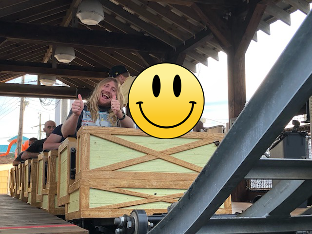

| |
Pirate's Goldrush Review
We're here at Playland's Castaway Cove. Today, we're reviewing one of the parks kiddy coasters, Pirates Goldrush. Hop in the cars, accept the WTF Death Glare from the ride operator, and we're off. We go up the lifthill that's about the same size as us (Seriously?), and we're off. We go down a curved drop, barely gain any speed. Go through a tiny hill. Then go through a couple speed bumps.....I mean bunny hops into the station. You know what this feels like? A kiddy kiddy coaster. It's like they saw a standard Kiddy Coaster from Miler and then said "Hey. Can you build that? Only make it even smaller? Can you make a Jr. version of your kiddy coaster?". Cause that's basically what this is. Even by kiddy coaster standards, this sucks. One and done.
1/10
Location: Playland's Castaway Cove
Opened: 2013
Built by: Miler
Last Ridden: June 18, 2021
Pirate's Goldrush Photos

Home
|